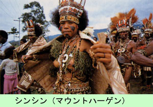

第６６ ヤカンジャビンで持久生活 １．ヤカンジャビン 山を登ったり、下ったり、そしてまた、川を溯ったり、散々苦労して次の目的地ヤカンジャビンに向かって転進していました。 ここニユーギニアでは川が道になっていました。戦場に来た初の頃は、川が流れていて道がそこでなくなってしまうと心配したも のです。日本では到底想像もつかない鬱蒼たる森のジァングルが何処までも続く。こんな事は、今まで、体験したこともなく想像 さえ出来ませんでした。戦後これが熱帯降雨林！であることを知りました。 或る所にさしかかったら上空が突然に開けた。４０メートル四方もある明るい平坦な場所で、休憩するには最適でありました。 四方は大密林が茂っているが、この広場だけは直射日光が差し込み明るく誠に気持ちがよい。我々はいい所が有ったと喜びました。 ところが、休憩しようとしたら、一番いい場所に人骨が散在している。尚もよく見たら、ムルック（火食鳥）の骨を真ん中にして、 ４体の人間の骨が獣骨を取り囲んでいた。これを見たら、嫌な気持ちになった。おそらく、射撃の上手い兵士が、運よくムルック を撃ち取ったのであろう。４人は喜んでムルックを腹一杯食べたが、全員はいま、栄養失調になっていたので、突然に沢山の肉を 食べて、おなかを壊し全員動けなくなり、そのまま死亡したものと想像しました。４人の戦友達は仲良く白骨になって、火食鳥を 取り囲むようにして死んでいたのです。誠に非情な情景を見てしまいました。 この場所は乾燥した良い所で、休憩するには最適でしたが、人間の白骨と獣骨があり、休む気にはなれませんでした。涙を飲ん で、その場を通り抜け、またも、ジャングルの中を先に進みました。ほどなく、直径が２メートルは優に越す大木が行く手に倒れ ていて、大自然の驚異を感じました。話は溯りますが、私がラバウルにいた時（昭和１７年１２月）、真夜中にドーンという音を 聞き、あの音は大砲の音？と思ったことが有りましたが、『大木が寿命がつき倒れた音だ』と教えられたことを思い出しました。 こんな大木だから、さぞや大きな音がしただろうと驚嘆しました。 さらに進み、ジャングルを通り抜けたら、突然大草原に出ました。上空を遮るものは何一つない、満空の青空がみえます。気持 ちがよい草原だ。この草は日本の茅によくにていた。私どもの服装は夏服で、半袖姿だから、露出している腕が茅に切られて傷だ らけになった。そこをやっと通り抜けたら、向こうの丘に沢山の椰子の木が高く茂っているのが見えてきた。その木の間に部落が 見える。そこが目的地の『ヤカンジャビン』でした。 ヤカンジャビンには現地人が約５０名ばかり住んでいました。ここの酋長の名はワラガといった。キャプテンのワラガが、 『我々はカナカ族である』と、いって誇らしげに胸をたたいて自慢した。彼の顔形は獰猛のように見え、少し気味が悪かった。 黙って、現地人の生活を見ていると、昼間でも男はぶらぶらして遊んでいる。女達は子供と一緒で、畑からタロ芋など食べ物を 収穫、家に持ち帰り、料理するのが仕事のように思われました。 住居家屋は、ビンロウ樹で床を作り、ヤシの葉で屋根を葺き高床式住居でした。中には、屋根はヤシの葉で編み、地べたの土間 に、直に寝起きする者も居ました。土間の片側にヤシの葉で編んだ寝床があり、土間の中央には囲炉裏があった。ここニユーギニ アは赤道直下の南緯５度付近に位置しているが、日中は凄く外気温度が高いにも拘らず、夜になると冷えこんでくるので、彼等は 囲炉裏に火を起こし、一晩ぢゅう暖を取りながら真っ裸で寝ていました。雨の日は、この囲炉裏でタロ芋を焼き食事をしていまし た。彼等は物を貯えて置くという事はしないので、雨の日は食べる物がなくなる。そこで、『おなかがへった』と、口ではいうが、 決して食べ物を取りに行こうとはしない。彼等はマラリヤになるのをひどく恐れ、雨に濡れるのを極端に嫌っていたのです。 ある時、雨の日に原住民の若者に 『食べ物を取りに行ってこい』と、言ったらその若者は 『キャプテン ノーグッド ミィベラ マラリア』 と言って、畑に食べ物を取りに行こうとはしなかった。彼等は病気のことは何でも『マラリア』と言う。おなかが痛い時は「おな かがマラリア」と言う。ラテン語では病気のことをマラリアと言うそうである。 Ａ．蕃刀 ヤカンジャビンのスクールボーイの家に行った時の事である。彼の家は高床式家屋ではなかった。床は土間になっていた。家屋の 天井裏を注意深く見たら、蕃刀が屋根裏の桟に差し込んであった。彼等は何処にいくにも肌身を離さず蕃刀を持って歩く。一番大切 な物らしい。 道を歩く時、邪魔になる物は木の枝でも草でも何でも蕃刀で切り取って進んでいく。 ヤシの実の果汁を飲む時には、蕃刀でヤシの皮を切り取り、中から出てきた堅いヤシの実に上手に穴をあけ、そこから上手に美味そ うに飲む。蕃刀は彼等には生活必需品で、時には恐ろしい凶器にもなるのです。 この蕃刀を一本、手に入れるためには、彼等は半年ほど働かねばならないと言う話を聞いた事がありました。何とも高価なもので した。この蕃刀は彼等にとっては、たった一つの鉄製の道具でした。 料理するときも包丁の代わりに蕃刀を使っていました。蕃刀の用途は実に多用でした。 Ｂ．調味料 現地人は料理に調味料は一切使わない。自然の物をそのまま食べる、または焼いて食べる。煮て食べる事はしない、大体、鍋は持 っていないのです。そんな生活でも、彼等に食塩を上げると凄く喜びました。食塩を付けて実にうまそうに食べていました。岩塩が あると言う事は知っていましたが、ついに岩塩は見たことはなかった。彼等には塩は大変な貴重品であると言う事が分かりました。 彼等の食生活は食べたい時に、必要なだけ採って食べていました。貯蔵したり燻製したりして貯蔵することは有りませんでした。 タロ芋（日本の里芋）は焼いて、右手でつかんで皮ごと食べていました。決して左手では握らなかった。その訳を聞いたら、ペコ ペコの時（トイレのこと）、左手を使うから汚いと言う事でした。ペコペコは一定した場所を決めていました。誠に気持ちの良さそ うな所にありました。紙はありません、木の葉です。日本の兵隊もそうしていました。タロ芋は主食であるということでした。 Ｃ．焼き畑農耕作業 焼き畑の農耕作業を見にいった事がありました。彼等の農耕は焼き畑農耕だったから、ある周期で（何年に１回か不明）、ジャン グルを蕃刀で伐採し、１週間位乾燥させ、頃合を見て火を付け焼き払う。この仕事は男の仕事でした。大木は火に焦げて枯れてしま い、枯れ木として残っていました。何年かに１回の焼き畑農耕の時期が来ると、その時だけは、何日間か、４、５日かな？男女とも 共同作業で、実に良く働いた。 種の付いたタバコの茎を根元から切り取り、軒先に吊して、乾燥させてあったものを畑に持ってきて、女性達が蒔きたい地面の上 で、種の付いた枝を手で強くトントンと叩く。タバコの種は殻と一緒に地面に飛散する。これでタバコの種蒔きは終りです。誠に簡 単でした。タバコの種蒔きは、これで良いのかと疑った。が、何日か立って畑を見にいったら、タバコの葉は立派に茂っていたので 驚いてしまいました。 バナナの植え付けは、蕃刀で深さ約３０センチの穴を掘り、その穴にバナナの苗木を差し込み土をかぶせるだけである。バナナの 苗木は親バナナの根元に新芽が出てくるから、それを分蕨すればよい。因みにバナナは半年したら立派に育ち実を付けるという。バ ナナは年に２回収穫出来ることを知りました。仮にバナナの苗木を１８０本植えると、年中、毎日バナナがたらふく食べられるとい う勘定になります。 ヤシの木は、ヤシの実は下の方に大きな実が沢山付いている、上に行くにつれて、段々小さくなり、上の方には次々に花が咲いて いる。ヤシの実は下の方から順々に熟れて行く。 Ｄ．原住民の生活 自然の恩恵が豊富であるから、原住民の生活はおおらかで幸福に満ち溢れていました。真っ裸で、裸足で遊んでいる子供達の姿は、 天真爛漫そのものでした。子供達の澄んだ瞳とさわやかな笑顔を見ていると、まるで、神様を見て居るように思われました。 ニユーギニアの原住民の生活は、人間性に溢れていて、大自然そのもので、この世の極楽の様に思われました。ある日の事、長さが 優に一メートルはある三角形の形をしたバナナを肩に担いで、夕暮れ時、家路を急ぐ裸姿の原住民の姿を見た時は、余りにもバナナ が大きいので吃驚してしまった。あんなに大きなバナナをどのようにして食べるのか？と思いました。 夕暮れの黄昏時に、この光景を見た時は、人間本来の生活の姿を見たようで、忘れられない感動を覚えました。 彼等は熟れたバ ナナはあまり食べない。青いバナナを火で焼いて食べる。フニァ フニァカィカィと言っていました。焼いたバナナは甘味はなく、 渋味もなく、これなら毎日食べてもあきないと思いました。 この頃は、食べ物が極端に少なく、毎日腹をすかしていて、食べ物に ありつく事ばかりを誰でも考えていました。 そんなある日、同僚の山下中尉が、たまたま居合わせた原住民の娘に 『一緒にガーデンに行こう』と、誘った。山下中尉はその娘と一緒にガーデン（畑）について行けば、なにがしかの食べ物にありつ けるだろうと、考えただけの話でした。ところが、そばでこの情景を見ていた原住民たちがゲラゲラ笑い出した。 何だか？その場の様子が、色気があって少しおかしい？何かあるなと思って、私のそばにいた原住民の一人に 『どうして！笑うんだ？』と、聞いてみた。ところが、なんとそれは大変なことでした。 『女性と一緒にガーデンに行く』と言う事は、二人で、畑でデートしましよう、という事でありました。 ゲラゲラ笑う筈だと思いました。その話を聞いたので、また、いろんな事を聞いてみました。すると、色々の事を教えてくれまし た。夫婦の営みは、夜のハウスの中ではなく、昼間、ガーデンの中にある小屋だと言う事でありました。この小屋とは日本の西瓜泥 棒の見張り小屋みたいな小さいものです。中年の男性にその事をさらに細かく聞いてみた。夫婦の営みは１か月に１回だけという。 それ以上は女性の方が無理だと教えてくれました。その時の男の表情は真剣そのものでした。そんな訳で決して疑ってはいません。 人口も昔からあんまり増えてはいないらしい。 パプアニユーギニアはこの世の極楽でした。羨ましいとさえ思いました。我々日本兵にとっては、この世の地獄でありました。  ２．原住民の風俗と習慣 ヤカンジャビンのキャプテン・ワラガの話によると 『外の部落の者との結婚は禁じられている』という。それでも外の部落のキャプテンと話し合って、双方のキャプテンが了解すれば、 外の部落の者とも結婚ができるという。但し、外の部落から嫁さんを貰う時は、こちらの部落からも嫁さんを１名出すことになってい る。キャプテン同士で、話し合えばよいと言う。そこで、私はキャプテンに 『どうして？そんな事をするのか？』と、尋ねてみた。キャプテンはこちらの部落の人口が減るからだという返事でした。 隣村の者を恋し合っても、キャプテン同士の許可が無いと、結婚出来ない掟になっている事を知りました。 ３．タロ芋と蛇の丸焼き 彼等の焼き畑農耕を後学の為に見にいった事があります。常日頃は、なんにもしないで、遊んでばかりいた男達が、今日は一生懸 命に立回り、働いていた。男達は蕃刀を上手に使って、立ち木を伐採する。余り大きな木は、手を付けないでそのまま残した。 立ち木の伐採が終わると、４、５日放置して、頃合を見て、乾燥した木の葉に火をつけ森林を焼き払う。誠に壮大な焼き畑農耕でした。 お昼時になって、座って農耕作業を見ていた私に、村の独りの女性がやって来て 『キャプテン！食べなさい』と言って、軍隊の飯盒を差し出し、彼女は帰っていった。 これはしめた！と、喜んで、飯盒の蓋を開けたら、美味しそうな粒揃いの蒸したタロ芋が、飯盒の中に一杯詰めてあった。ところ が、小指位の太さの蛇が１匹蚊取線香の様に渦を巻いて、小さい頭をもたげた儘の姿の丸焼きにして、タロ芋の上に置いてあった！ 蓋を開け、これを見た瞬間、ギョッ！とするほど気持ちが悪くなった。嫌々ながら、蛇の頭だけを切り取り野原に捨てた。蛇は丸焼 きで少し黒く焦げて居たが臭くは無かった。生きるために、目をつぶり、勇気を出して、渦巻状になつた、丸焼きの蛇を食べました。 原住民は蛇を、この様にして蛋白源として食べていることを知りました。 ４．原住民の狩猟 ヤカンジァビンの村はづれにある小高い丘の斜面から、南の方向を眺めると、セピック河の流域にどこ迄も続く大草原が見られた。 私がこの斜面にたった独りで座って居た時、おりしも、そばの１本の木にカッコウ鳥によく似た鳥が止まって、いい声で鳴いた。こ の声を聞いて居たら、敵に包囲されて、ここが戦場である事を忘れてしまい、私は夢の国の楽園に居るようで、暫く天国に居るよう な錯覚を覚えました。大草原の遥か彼方には低い連山が連なっていました。 セピック河畔にあるこの大草原を見ていたら、キャプテン・ワラガが私に話してくれた事を思い出しました。それは、すなわち 部落民の老弱男女全員が揃って、この大草原に狩猟に行く。その時の話である。皆んなが大草原に到着したら、部落民は大きな円 形に展開する。頃合を見計らって、一斉に草原に火をつける。火を付けたら外側に火が燃えていかないように、外側に燃えていく野 火は消し、内側だけに燃えて行くようにする。草原の野火は段々と小さい輪になって行く。小さくなって行く野火の外側には、彼等 が獲物が飛び出して来るのを待ち受けていて、野火の熱と煙に攻め立てられて、蛇とかトカゲとか色々の獲物が、火の海の外側に逃 げて来るところを捕らえるのだという。飛び出してきた鳥は棒で叩き落としたり、または、いきなり手でつかまえる。そんな小さな 獲物は捕らえた本人の所有になる。野火で追い詰められ捕らえられた野豚等の大きな動物は部落共有の物となると言った。 豚は部落に持ち帰り、料理して部落全員で食べるという。特に豚がとれると、歌って、踊って夜を明かす。楽しいシンシンという 宴を催すという。夕方七時頃から、翌朝の明け方までシンシンが続くのである。よくもあんな体力と情熱があるものだ、とあきれる 一方で、いささか驚きでもありました。 ５．竜眼の実 見上げるほどの高い木の上のほうに、竜眼の実が沢山なっていた。夕暮れになると、沢山のコウモリがこの竜眼の実を食べにやっ てくる。コウモリが枝から枝え羽ばたいて移動するたびに、竜眼の実が下に落ちてくる。私共はコウモリの集まってくる頃を見計ら って、木の下で、竜眼の実が落ちてくるのを待ちました。この時刻になると、北の空は薄暗くなっていて、茫々たる南太平洋が母国 日本のある北の方の水平線に消えている。この頃の我々には木に登って、竜眼の実を叩き落とすという体力は無かった。竜眼の果肉 は美味い。また、種は焼いて食べると旨い。ところが、隣の中隊の兵が、竜眼の種を一人で４個以上も焼いて食べたら、翌日に下痢 したという話を聞いた。 種は油濃くて美味いが、この頃の私共の体は栄養失調になっていたから、油濃い物を沢山食べると、必ず下痢したものでした。こ の頃は、一旦下痢すると、体力を回復する事は大変難儀なことでした。体力がなくなって行くことは命取りにつながりました。
